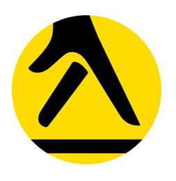
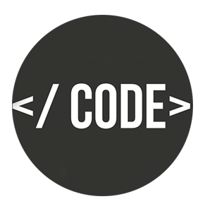

Work
I am currently on my Placement Year with Yell, where I am focusing on developing Yell Articles.
Will be releasing soon...
Current Projects
Alongside working at Yell, I am also currently freelancing.
Here's some of my Recent Projects

Coding
Some of the languages and tools I am experienced in:
- HTML, CSS, JavaScript/JQuery, SASS, Jade
- Java (OOP), Swing/FX, Python, C, PHP, Bash Scripting
- WordPress, MySQL, PostgreSQL
- GIT, SVN, Trello
University
Studying Computer Science at Royal Holloway University.
Finished Second Year with an average of 75% (1st)Free Time
In my free time I usually focus on my two main hobbies which consists of:
- Photography/Videography
- Magic (Member of The Magic Circle) :D